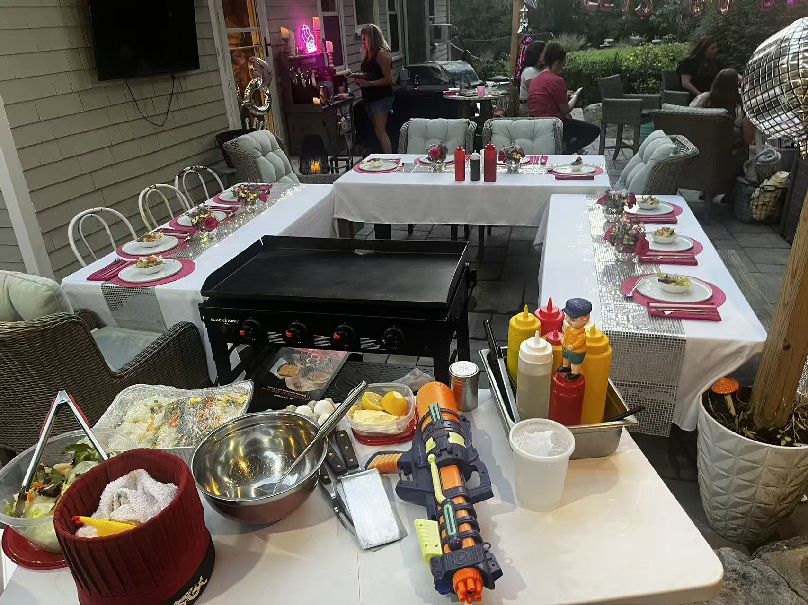

Queens Hibachi Catering
A1 Hibachi Party brings private outdoor hibachi catering to Queens backyards, patios, driveways, rooftops, birthdays, graduations, and family gatherings.
Why Queens Books A1
Queens is one of the best areas for private hibachi catering because many homes have outdoor space like backyards, patios, and driveways that are perfect for chef setups.
If you are searching for Queens hibachi catering, private hibachi chef Queens, backyard hibachi party Queens, or outdoor hibachi catering Queens NY, A1 Hibachi Party brings the chef, grill, fire show, and fresh food directly to you.

Queens Event Ideas
Queens is perfect for backyard hibachi parties, graduation celebrations, birthdays, family gatherings, and private outdoor dinners.
Turn your Queens backyard into a live hibachi experience with fresh food, fire show moments, and chef entertainment.
Celebrate graduations with a fun group dinner that feels more exciting than regular catering.
A1 hibachi brings energy, food, and entertainment that makes birthday dinners unforgettable.
Great for family events where everyone can enjoy the show, eat together, and stay at home.
Many Queens homes work well with driveway or patio hibachi setups when outdoor space is available.
A strong option for weekend celebrations where guests want something fun, social, and memorable.
A1 Hibachi Party provides Queens outdoor hibachi catering for customers looking for a private chef experience at backyards, patios, driveways, rooftops, terraces, courtyards, and approved outdoor event spaces. If you are searching for hibachi catering near me in Queens, Queens private hibachi chef, backyard hibachi party Queens, or hibachi birthday party Queens NY, A1 Hibachi Party can bring live cooking, fresh proteins, fried rice, vegetables, salad, premium upgrades, add-ons, and memorable chef entertainment directly to your event.
Ready To Book Queens?
Submit your date, guest count, package choice, event address, and setup details. Our team will review your booking and confirm availability, travel, setup requirements, and final pricing.